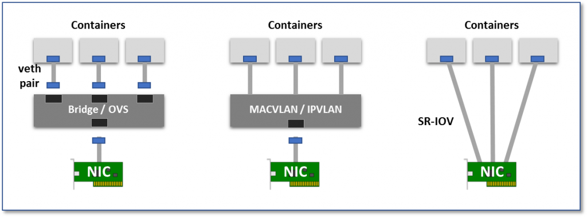

kubernetes网络和CNI简介
kubernetes提供了出色的容器编排能力，同时开放了网络、存储、运行时的接口，打造了云原生生态的同时，也顺手一统了容器云的天下。网络是云服务的基础和核心之一，就网络插件而言，市面上就有很多，kubernetes提供了CNI为所有网络插件提供接口。下面简单介绍一下kubernetes的容器网络接口。
Pod网络
对于任何kubernetes网络方案，都需要满足以下需求：
- 每个Pod都拥有一个独立的IP地址，而且假定所有的pod都在一个可以直接连通的、扁平的网络空间中；
- 用户不需要额外考虑如何建立Pod之间的连接，也不需要考虑将容器端口映射到主机端口等问题；
- 网络要求：
- 所有的容器都可以在不用NAT的方式下同别的容器通讯
- 所有节点都可在不用NAT的方式下同所有容器通讯
- 容器的地址和其他宿主机和容器看到的地址是同一个地址
Pod网络基本原理
容器通过使用linux内核提供的Cgroups和Namespaces技术实现了相互之间的网络、存储等资源的隔离与限制。对于网络，kubernetes项目中的Pod则通过让一组用户容器和pause容器/infra容器共享一个network namespace的方式，使一个Pod内的容器都使用了一个网络栈。而一个 Network Namespace 的网络栈包括：网卡（Network Interface）、回环设备（Loopback Device）、路由表（Routing Table）和 iptables 规则。所以，不难想象，Pod的网络和一台虚拟机的网络栈配置起来实际上是类似的，比如同样需要虚拟网卡，IP、MAC地址等，并且每个Pod都有自己唯一的网络栈。当所有的Pod都有了自己的网络栈后，如果想要连接两个Pod进行通信，则类似于其他任何网络架构，需要配置交换机、路由器等，并为其规划IP，路由等信息。如果是对于物理机，我们可以使用网线、交换机、路由器这些设备进行连接，但在Pod中显然需要其他方式。
刚开始接触容器的时候，觉得这种设计好奇怪，本来进程间通信挺容易的，如今用namespace做隔离，再想办法让隔离的进程进行网络通信…~_~!!
Pod网络类型
kubernetes Pod的网络方案有很多，最典型的就是Flannel的三种后端实现方式了（UDP、VxLan、host-gw），讨论这些则主要是在关注容器跨主机通信的问题。而这里主要讨论的则是Pod的内部的网卡如何创建，又如何将网络数据包在宿主机和容器之间传递。

图片来自这里
- 虚拟网桥：创建一个虚拟网卡对（veth pair），一头在容器内，一头在宿主机的root namespace内，并且使用Linux bridge（网桥）或者OpenvSwitch（OVS）来连接两个不同namespace内的网卡对。这样一来，容器内发出的网络数据包，可以通过网桥进入宿主机网络栈，而发往容器的网络数据包也可以经过网桥进入容器。例如，docker项目中的docker0、kubernetes项目中的cni0都是网桥设备。
veth pair有个很好的特性，两张虚拟网卡总是成对的出现，并且，从其中一个”网卡”发出的数据包可以直接出现在与它对应的另一张”网卡”上，有点像物理的”虫洞”嚯
- 多路复用：如图所示，使用一个中间网络设备，暴露多个虚拟网卡接口，容器网卡都可以接入这个中间设备，并通过mac地址/IP地址来区分packet应该转发给哪一个容器设备。
多路复用：物理上，一根光纤内，可以同时跑很多很多不同频率的光波，这就是多路复用的其中一种实现方式。
- 硬件交换：还有个“比较直接”的方法就是为每个Pod分配一个虚拟网卡，这样一来，Pod与Pod之间的连接关系就会变的非常清晰，因为近乎物理机之间的通信基础。如今大多数网卡都支持SR-IOV功能，该功能将单一的物理网卡虚拟成多个VF接口，每个VF接口都有单独的虚拟PCIe通道，这些虚拟的PCIe通道共用物理网卡的PCIe通道。
kubernetes CNI
工作原理简介
CNI是Container Network Interface的缩写，它是一个通用的容器网络插件的k8s网络接口，开源社区里已经有了很多实现容器网络的方案，不同的网络实现方案在k8s内都是以插件调用的形式工作，所以这里需要一个统一的标准接口。如果将k8s的Pod视为一台“虚拟机”，那么网络插件的工作就是管理这台虚拟机的网络栈，包括给这台虚拟机插入网卡、配置路由、IP等；而CNI的工作则是对接网络插件和kubelet容器运行时管理工具（对于docker容器运行时来说实际上是dockershim），主要体现在Pod的创建和删除过程：
- CNI加载目录
/etc/cni/net.d/下的配置文件，比如：10-calico.conflist - Pod Create
- 使用macvlan二进制文件创建网卡
- 调用dhcp二进制文件获取IP
- 将网卡放入pod network namespace
- Pod Delete
- 调用dhcp二进制文件释放IP
- 调用macvlan二进制文件删除网卡
- 结束容器
CNI 配置文件，给CRI使用的，比如dockershim1
2
3
4
5
6
7
8
9
10
11
12
13
14
15
16
17
18
19
20
21
22
23
24
25
26
27
28
29root@master8088:~# cat /etc/cni/net.d/10-calico.conflist
{
"name": "k8s-pod-network",
"cniVersion": "0.3.0",
"plugins": [
{
"type": "calico",
"log_level": "info",
"datastore_type": "kubernetes",
"nodename": "master8088",
"mtu": 1500,
"ipam": {
"type": "host-local",
"subnet": "usePodCidr"
},
"policy": {
"type": "k8s"
},
"kubernetes": {
"kubeconfig": "/etc/cni/net.d/calico-kubeconfig"
}
},
{
"type": "portmap",
"snat": true,
"capabilities": {"portMappings": true}
}
]
}
可执行文件
CNI官方维护的插件包括以下几个，对于已经搭建好的k8s，cni插件可以在/opt/cni/bin/文件夹下查看：
CNI的基础可执行文件按照功能可以划分为三类：
Main插件：创建具体网络设备bridge：网桥设备，连接container和hostipvlan：为容器增加ipvlan网卡loopback：lo设备macvlan：为容器创建一个MAC地址ptp：创建一对Veth Pairvlan：分配一个vlan设备host-device：将已存在的设备移入容器内
IPAM插件：负责分配IP地址dhcp：容器向DHCP服务器发起请求，给Pod发放或回收IP地址host-local：使用预先配置的IP地址段来进行分配static：为容器分配一个静态IPv4/IPv6地址，主要用于debug
meta插件：并非单独使用bandwidth：使用Token Bucket Filter（TBF）来限流的插件flannel：flannel网络方案的CNI插件，对应于flannel配置文件portmap：通过iptables配置端口映射sbr：为网卡设置source based routingtuning：通过sysctl调整网络设备参数firewall：通过iptables给容器网络的进出流量进行一系列限制
目前kubernetes项目中的Pod只能加载一个CNI的配置，如果需要一个POD使用多网卡多网络方案是不可以的。
实验
实验内容：go安装社区维护的CNI相关插件，在linux主机上创建一个network namespace，再利用安装的网络插件给这个linux network namespace配置好网络。实验方法教程参考的是这里
安装cni插件：1
2
3
4
5
6
7
8mkdir -p go/src/github.com/containernetworking/
cd go/src/github.com/containernetworking/
git clone https://github.com/containernetworking/plugins.git
git clone https://github.com/containernetworking/cni.git
cd plugins
./build_linux.sh
cd ../cni/cnitool
go build cnitool.go
linux上创建一个network namespace：1
sudo ip netns add Mytest
设置网络参数：vi /etc/cni/net.d/10-myptp.conf1
2
3
4
5
6
7
8
9
10
11
12
13
14
15{
"cniVersion": "0.3.1",
"name": "myptp",
"type": "ptp",
"ipMasq": true,
"ipam": {
"type": "host-local",
"subnet": "172.16.29.0/24",
"routes": [
{
"dst": "0.0.0.0/0"
}
]
}
}
模拟给容器配置网络：1
sudo CNI_PATH=../../plugins/bin ./cnitool add myptp /var/run/netns/Mytest
返回值1
2
3
4
5
6
7
8
9
10
11
12
13
14
15
16
17
18
19
20
21
22
23
24
25
26
27
28{
"cniVersion": "0.3.1",
"interfaces": [
{
"name": "vethe6180c75",
"mac": "ea:d0:00:22:ce:33"
},
{
"name": "eth0",
"mac": "56:20:72:2b:5a:7e",
"sandbox": "/var/run/netns/Mytest"
}
],
"ips": [
{
"version": "4",
"interface": 1,
"address": "172.16.29.4/24",
"gateway": "172.16.29.1"
}
],
"routes": [
{
"dst": "0.0.0.0/0"
}
],
"dns": {}
}
测试网络是否可用：1
2
3
4
5
6
7
8
9$ sudo ip -n Mytest addr
1: lo: <LOOPBACK> mtu 65536 qdisc noop state DOWN group default qlen 1000
link/loopback 00:00:00:00:00:00 brd 00:00:00:00:00:00
3: eth0@if12: <BROADCAST,MULTICAST,UP,LOWER_UP> mtu 1500 qdisc noqueue state UP group default
link/ether 56:20:72:2b:5a:7e brd ff:ff:ff:ff:ff:ff link-netnsid 0
inet 172.16.29.4/24 brd 172.16.29.255 scope global eth0
valid_lft forever preferred_lft forever
inet6 fe80::5420:72ff:fe2b:5a7e/64 scope link
valid_lft forever preferred_lft forever
进入namespace，ping一下百度的DNS1
2
3
4
5
6
7
8$ sudo ip netns exec Mytest ping -c 2 180.76.76.76
PING 180.76.76.76 (180.76.76.76) 56(84) bytes of data.
64 bytes from 180.76.76.76: icmp_seq=1 ttl=49 time=27.4 ms
64 bytes from 180.76.76.76: icmp_seq=2 ttl=49 time=26.3 ms
--- 180.76.76.76 ping statistics ---
2 packets transmitted, 2 received, 0% packet loss, time 1001ms
rtt min/avg/max/mdev = 26.374/26.916/27.458/0.542 ms
清除：1
2sudo CNI_PATH=../../plugins/bin ./cnitool del myptp /var/run/netns/Mytest`
sudo ip netns del Mytest
总结
- 容器网络实现了容器间、容器和宿主机间、容器和服务间的通信；
- CNI主要提供了容器运行时和网络插件之间的协作；
- CNI主要以插件调用的方式工作。
- 自己实现一个网络方案，除了需要实现网络本身（例如：flanneld），还需要该网络对应的CNI插件（例如：flannel）。
最后多说一句，所谓的云服务其实就是基于网络的服务，好好规划网络可以充分利用数据中心的资源，只有充分利用数据中心的资源，才能称之为云计算。
参考资料
- https://github.com/containernetworking/cni/tree/master/cnitool
- https://thenewstack.io/hackers-guide-kubernetes-networking/
- http://www.cnblogs.com/YaoDD/p/7419383.html
- https://github.com/containernetworking/plugins
- https://time.geekbang.org/column/article/64948
- https://www.zhihu.com/question/24950671
原文作者: kiddie92
原文链接: https://kiddie92.github.io/2019/04/25/kubernetes网络和CNI简介/
许可协议: 知识共享署名-非商业性使用4.0国际许可协议